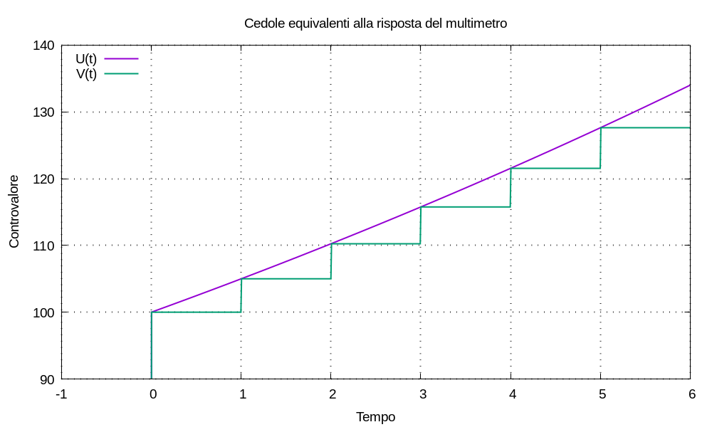

Sappiamo che esistono titoli obbligazionari che pagano cedole periodicamente, per esempio una volta l’anno. Vogliamo determinare l’entità delle cedole che, pagate periodicamente, simulino l’incremento di controvalore d’un multimetro, come mostrato dalla figura.

Configuriamo la remunerazione d’un multimetro al valore λ = log1p(J); con un solo versamento all’istante t0 = 0, il controvalore del multimetro è:
U(t) = C u(t) esp(λ t)
se k ∈ ℕ è un numero naturale, all’istante t = k ≥ 0 il gradino di Heaviside è pari a uno e risulta:
U(k) = C esp(λ k) = C esp(λ k)
all’istante k + 1 risulta:
U(k + 1) = C esp[λ (k + 1)] = C esp(λ k) esp(λ)
l’incremento di controvalore si può scrivere:
U(k + 1) - U(k) = C esp(λ k) esp(λ) - C esp(λ k) = C esp(λ k) [esp(λ) - 1]
posto espm1(λ) = esp(λ) - 1 risulta:
U(k + 1) - U(k) = C espm1(λ) esp(λk)
Definiamo una nuova funzione, di tipo controvalore, estendendo la sommatoria agl’indici h ≥ 1:
V(t) = U(0) u(t) + Σh [U(h) - U(h-1)] u(t - h)
possiamo capire che V(k) = U(k) per ogni k ≥ 0, per esempio:
V(2) = U(0) u(2) + [U(1) - U(0)] u(2 - 1) + [U(2) - U(1)] u(2 - 2)
tutti i gradini di Heaviside sono pari a 1 e semplificando risulta:
V(2) = U(0) + [U(1) - U(0)] + [U(2) - U(1)] = U(2)
la funzione V(t) si può scrivere:
V(t) = U(0) u(t) + Σh C espm1(λ) esp[λ(h-1)] u(t - h)
ricordando che espm1(λ) = J e esp(λ) = 1 + J, se all’istante h ≥ 1 aggiungiamo una cedola pari a:
C espm1(λ) esp(λ)(h-1) = C J (1 + J)(h-1)
teniamo il passo con l’incremento esponenziale.